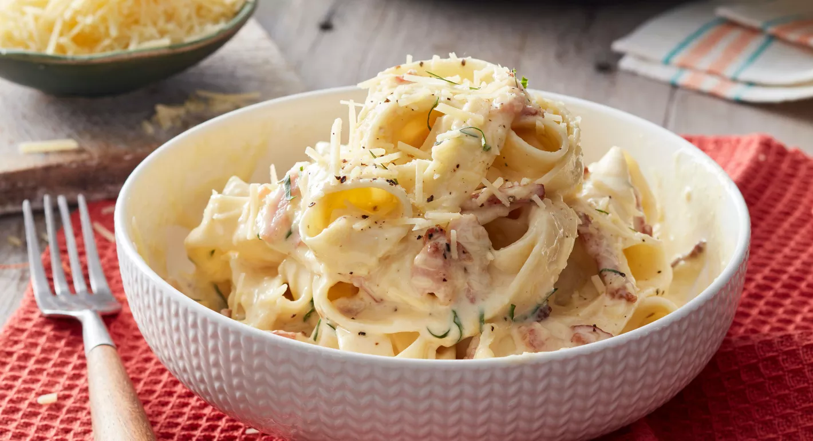

Chocolate Biscuits

Description
Super creamy and packed with extra flavour using perfect italiano permesan, this creamy fettucine carbonara is ready in just 15 minutes!
Ingredients
- 37g dried fettuccine
- 1 tbsp olive oil
- 2 garlic gloves, crushed
- 200g bacon, thinly sliced
- 2 eggs
- 3/4 cup (185ml) cooking cream (light thickened cream)
- 1 cup (125g) perfect italiano extra sharp permsan grated
- Pepper, to taste
- 1/4 cup fresh flat-leaf parsley, finel chopped
Method
- Step 1: Cook pasta in a large saucepan of boiling water, until just tender following the packet instructions. Drain and return to pan over low heat.
- Step 2: Meanwhile, heat oil in a medium frying pan over medium-high heat. Cook garlic and gbacon, stirring, for 3-4 minutes or until crisp. Set aside.
- Step 3: Whisk eggs, cream and 3/4 cup (30g) of the permsan in a large jug. Season with pepper. Add egg mixture and half the parsley and half the bacon
mixture to pasta. Toss gently to combine and warm through (do not over heat)
- Step 4: Server pasta topped with remaining parsley, bacon and parmesan.